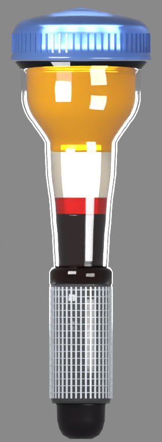

<!doctype html><meta charset="utf-8"><style>body{margin:0;background:#3a3a3a;font:14px sans-serif;color:#fff;display:flex;gap:18px;justify-content:center;padding:8px}figure{margin:0;text-align:center}img{height:520px;display:block}.ov{position:relative}.ov img+img{position:absolute;left:0;top:0;opacity:.5}</style>
<figure><figcaption>Gerçek ürün (site)</figcaption></figure>
<figure><figcaption>Model (aynı ölçek)</figcaption></figure>
<figure class="ov"><figcaption>Üst üste (%50)</figcaption></figure>
